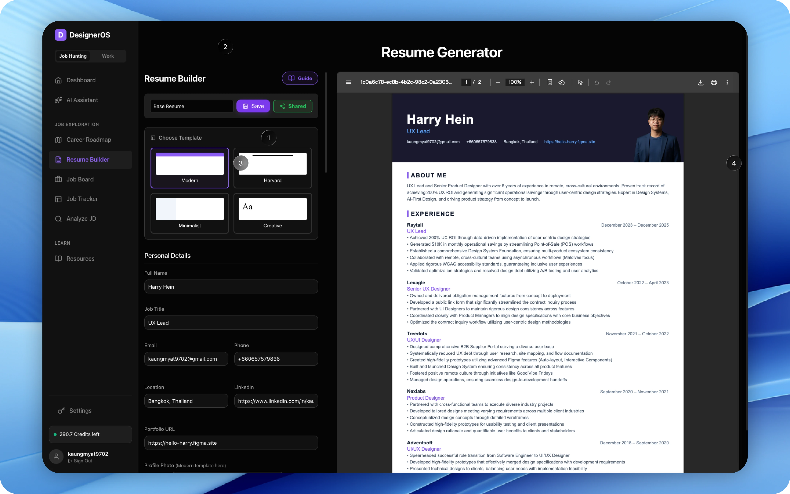
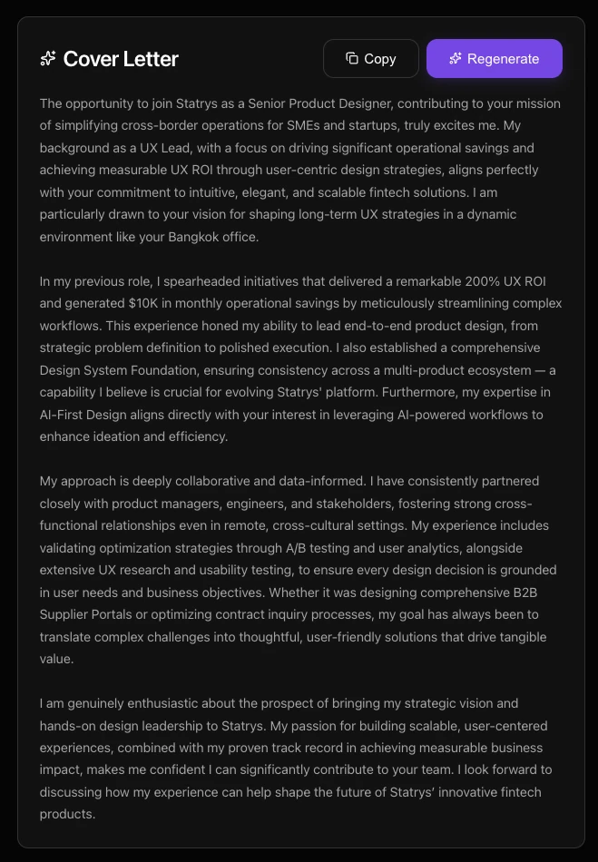
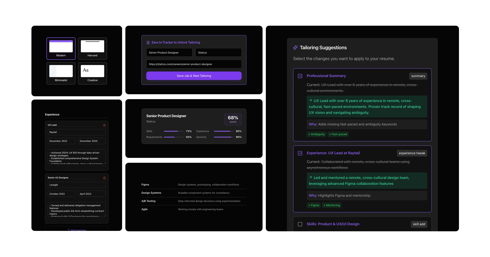

Designers spend 40 minutes per application manually tailoring resumes with Google Docs and ChatGPT. The output is generic. The pipeline closed the gap between how designers present themselves and what hiring teams actually look for.
Six weeks in. The spreadsheet had 47 rows. Two were highlighted green. She wasn't failing — she was invisible. The pipeline turned each job description into a brief, the base resume into an engine, and every application into a data point that made the next one stronger.
The friction wasn't the resume. It was the process around it.
Google Doc for keyword hunting. ChatGPT for generic rewrites. Resume v47 — still the same document. Every application started from scratch. No memory of what worked. No pattern from the 46 that didn't land.
She wasn't failing. She was invisible.
Semi-structured interviews. 3–8 years of experience. Jan–Feb 2026.
Three design decisions came directly from these findings: base resume first (give them a structured starting point), gaps before praise (show problems first), and no full AI rewrite (preserve voice and authorship).
Treat the resume as a living argument. Every job description is a new brief.
If AI can analyze a JD against the designer's actual resume data — surface gaps, rank by impact, generate rewrite-ready suggestions — the designer gets intelligence instead of guesswork. Build the engine once. Run it for every application.
Built with Claude (vibe-coded proof of concept), Figma variables synced as tokens, prototyped in Figma Make, tested with 5 designers, iterated with 8 beta users.



The analyzer needs real data to measure the gap. Everything downstream depends on having a structured source of truth — not a blank doc and a vague intent.
Show problems first. Inverted from instinct — drives action over reassurance. Designers ignored "looks great!" coaching; they acted on "here's what's missing."
Full rewrite fabricates claims and loses the designer's voice. Suggestions + editorial control preserve authorship — and authorship preserves trust.
A working-session marker only. The final deliverable is always clean. Hiring teams don't need to see the editing layer — they need to see the work.
V1 showed all suggestions simultaneously — users felt overwhelmed. Added impact ranking so highest-leverage changes surface first.
3/5 testers said the gap analysis felt discouraging. Softened the framing from "missing" to "opportunity to strengthen" without softening the data.
Measured against the pre-pipeline baseline. Self-reported time deltas across 8 beta testers, validated against Sarah's two-week run.
40 → 15 minutes per role. Time given back goes to portfolio polish, network outreach, or actual rest.
5 tailored applications, 2 interview callbacks — vs. 2 callbacks from her previous 47 generic apps.
Three-paragraph draft from JD + resume in under 5 minutes. Editable, voice-preserving, not auto-sent.
She ran the pipeline for a Stripe role. Score: 74. Top gap: design systems at scale. One bullet rewritten. Applied. The pipeline didn't guarantee an interview — it removed the bottleneck that made tailoring feel impossible.
Gap analysis + editorial control delivers 80% of the time savings with 100% of the authenticity. Full automation would have killed both.
Build the base resume once. Every application is a run of that engine — not a blank page. The leverage is in the comparison, not the composition.
The same resume data produces different tailoring for each role. The intelligence isn't in the model — it's in the comparison between resume and JD.
A designer who knows AI can't silently change their resume engages with suggestions more openly. Visible agency is the precondition for trust.
I design AI-first systems for enterprise workflows — pipelines, palettes, dashboards. Let's talk about what you're shipping next.